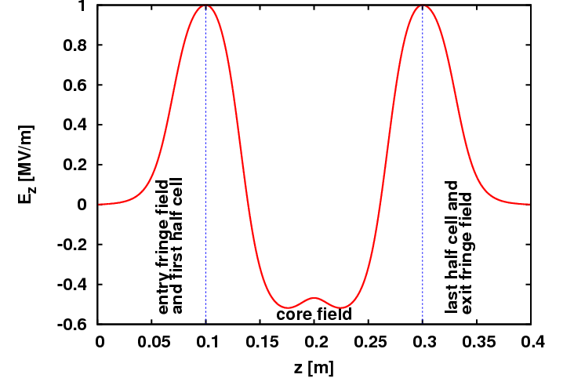

Appendix D — Auto-phasing Algorithm
D.1 Standing Wave Cavity
For external RF fields in OPAL-T, the instantaneous field is the interpolated spatial field multiplied by cos(omega t + phi). The energy gain of a particle is therefore
\[ \Delta E(\varphi, r) = q V_0 \int_{z_{\mathrm{begin}}}^{z_{\mathrm{end}}} \cos(\omega t(z,\varphi) + \varphi)\, E_z(z,r)\, dz. \tag{D.1}\]
To maximize the gain, one differentiates with respect to the lag \varphi and sets the derivative to zero. This yields the lag rule
\[ \tan(\varphi) = - \Gamma_1 / \Gamma_2. \tag{D.2}\]
The original appendix defines
\[ \Gamma_1 = \sum_{i=1}^{N-1} \left(1 + \omega \frac{\partial t}{\partial\varphi}\right) \int_{z_{i-1}}^{z_i} \sin\!\left(\omega \left(t_{i-1} + \Delta t_i\frac{z-z_{i-1}}{\Delta z_i}\right)\right) \left(E_{z,i-1} + \Delta E_{z,i}\frac{z-z_{i-1}}{\Delta z_i}\right) dz, \tag{D.3}\]
and
\[ \Gamma_2 = \sum_{i=1}^{N-1} \left(1 + \omega \frac{\partial t}{\partial\varphi}\right) \int_{z_{i-1}}^{z_i} \cos\!\left(\omega \left(t_{i-1} + \Delta t_i\frac{z-z_{i-1}}{\Delta z_i}\right)\right) \left(E_{z,i-1} + \Delta E_{z,i}\frac{z-z_{i-1}}{\Delta z_i}\right) dz. \tag{D.4}\]
Assuming piecewise-linear field and time-of-flight models between samples, the integrals can be evaluated analytically in terms of four coefficients:
\[ \Gamma_{11,i} = -\frac{\cos(\omega t_i) - \cos(\omega t_{i-1})}{\omega\Delta t_i}, \qquad \Gamma_{12,i} = \frac{-\omega\Delta t_i\cos(\omega t_i) + \sin(\omega t_i) - \sin(\omega t_{i-1})}{\omega^2 (\Delta t_i)^2}, \tag{D.5}\]
\[ \Gamma_{21,i} = \frac{\sin(\omega t_i) - \sin(\omega t_{i-1})}{\omega\Delta t_i}, \qquad \Gamma_{22,i} = \frac{\omega\Delta t_i\sin(\omega t_i) + \cos(\omega t_i) - \cos(\omega t_{i-1})}{\omega^2 (\Delta t_i)^2}. \tag{D.6}\]
With these, the appendix rewrites the accumulated sums in a form suitable for an iterative implementation.
D.1.1 Implemented Iterative Idea
The legacy algorithm starts from a guessed kinetic-energy evolution,
K[i] = K[i-1] + (z[i] - z[0]) * q * V;
b[i] = sqrt(1. - 1. / ((K[i] - K[i-1]) / (2.*m*c^2) + 1)^2);
t[i] = t[0] + (z[i] - z[0]) / (c * b[i])which assumes a roughly linear energy increase proportional to the maximum voltage. From that provisional t(z) model, OPAL computes the lag from Equation D.2, then updates the kinetic energy using the analytic segment formulas,
\[ K_i = K_{i-1} + q\,\Delta z_i \Bigl[ \cos\varphi\,\bigl(E_{z,i-1}(\Gamma_{21,i}-\Gamma_{22,i}) + E_{z,i}\Gamma_{22,i}\bigr) - \sin\varphi\,\bigl(E_{z,i-1}(\Gamma_{11,i}-\Gamma_{12,i}) + E_{z,i}\Gamma_{12,i}\bigr) \Bigr], \tag{D.7}\]
rebuilds the time-of-flight model, and iterates until \varphi converges.
D.2 Traveling Wave Structure
Traveling-wave auto-phasing is slightly more complicated because the field is composed of:
- an entry fringe field
- two standing-wave core contributions with phase offsets
- an exit fringe field
The appendix uses the field map FINLB02-RAC.T7 as the representative traveling-wave example.

1DDynamic field map used in the traveling-wave auto-phasing discussion.
The corresponding energy gain is written as the sum of four integrals over the entry fringe, two core components, and exit fringe. In the notation of the appendix, the two core contributions are shifted by one cell length s and by phase offsets \varphi_{c1} and \varphi_{c2}.
D.2.1 Example
The legacy example is:
FINLB02_RAC: TravelingWave, L=2.80, VOLT=14.750*30/31,
NUMCELLS=40, FMAPFN="FINLB02-RAC.T7",
ELEMEDGE=2.67066, MODE=1/3,
FREQ=1498.956, LAG=FINLB02_RAC_lag;From this, the appendix derives
\[ V_{\mathrm{core}} = \frac{V_0}{\sin(2\pi/3)} = \frac{2V_0}{\sqrt{3}}, \qquad \varphi_{c1} = \frac{\pi}{6}, \qquad \varphi_{c2} = \frac{\pi}{2}, \tag{D.8}\]
and an exit-fringe phase offset determined by NUMCELLS and MODE.
D.2.2 Alternative Approach for Traveling-Wave Structures
In the ultra-relativistic limit, where beta changes only weakly along the structure, the time-of-flight can be approximated linearly,
\[ t(z,\varphi) \approx \frac{z}{\beta c} + t_0. \tag{D.9}\]
For the traveling-wave example, the appendix then rewrites the derivative condition in terms of periodic core and fringe fields over a period 3 s, and shows how the expression simplifies because \omega/(\beta c) \approx 10\pi. The final reduced condition is expressed as a convolution,
\[ 0 \equiv \int_0^{3s} g(\xi-z)\,\bigl(G(z) - 26 H(z)\bigr)\,dz = \mathcal{F}^{-1}\!\left(\mathcal{F}(g)\,\bigl(\mathcal{F}(G)-26\mathcal{F}(H)\bigr)\right), \tag{D.10}\]
with the phase relation
\[ -\frac{\omega}{\beta c}\,\xi = \varphi. \tag{D.11}\]
The appendix also uses the trigonometric identity
\[ \sin(a+\pi+\pi/6) + \sin(a+\pi-\pi/6) = -\sqrt{3}\,\sin(a), \tag{D.12}\]
which is the final algebraic step that collapses the two core terms into the reduced convolution form.
D.3 Current OPALX Implementation
OPALX already contains an implemented cavity autophasing path. The runtime entry points are:
OPTION, AUTOPHASE = nParallelTracker::autophaseCavities()OrbitThreader::autophaseCavities()Algorithms/CavityAutophaser
The global option AUTOPHASE is interpreted as the number of refinements used in the phase search. If it is zero, no autophasing is performed. If it is positive, OPALX scans active RFCAVITY and TRAVELINGWAVE elements and chooses the phase that maximizes the reference-particle exit energy.
D.3.1 Scope and Control
The current implementation applies to:
RFCAVITYTRAVELINGWAVE
The per-element veto flag is:
APVETO
If APVETO is set, the element is skipped by the automatic search and its stored phase is used as-is.
D.3.2 Search Strategy
The implementation uses a two-stage numerical procedure:
- Build an initial phase estimate from the cavity model itself.
- Refine that estimate by explicitly tracking the reference particle through the cavity and maximizing the final kinetic energy.
The implementation object is CavityAutophaser. Its public entry point is
double getPhaseAtMaxEnergy(const Vector_t<double, 3>& R,
const Vector_t<double, 3>& P,
double t,
double dt);Internally it keeps the cavity-local initial reference state and then:
- calls
guessCavityPhase(...) - calls
optimizeCavityPhase(...) - writes the chosen phase back to the element
D.3.3 Initial Estimate for RFCAVITY
For standing-wave cavities, the first estimate is delegated to RFCavity::getAutoPhaseEstimate(...). That routine samples the on-axis field map, builds a spline, constructs iterative time-of-flight and energy histories, and evaluates an A/B phase condition equivalent in structure to the legacy appendix derivation.
So the OPALX standing-wave path is directly connected to the analytic appendix logic, but implemented numerically on the actual on-axis sampled field.
D.3.4 Initial Estimate for TRAVELINGWAVE
For traveling-wave structures, the first estimate is delegated to TravelingWave::getAutoPhaseEstimate(...). That implementation explicitly splits the field into:
- entry field
- two phase-shifted core contributions
- exit field
and iterates on the same energy-maximization idea while respecting the traveling-wave phase offsets already stored in the object.
D.3.5 Refinement by Direct Tracking
After the initial guess, CavityAutophaser::optimizeCavityPhase(...) performs a local energy scan around the current phase. The search uses:
- an initial step
dphi = pi / 360 - one-sided bracketing to find the uphill direction
AUTOPHASErefinement rounds, each halvingdphi
For each trial phase, the code evaluates the actual reference-particle energy by calling
rfc->trackOnAxisParticle(...)through CavityAutophaser::track(...). The final selected phase is therefore the one that maximizes the tracked on-axis reference-particle kinetic energy, not just the analytic estimate.
D.3.6 Special Cases
The current implementation handles two important special cases.
DC-gun-like structures If the RF frequency is effectively at or below
2*pi, the code treats the structure as a DC gun and selects0orpidepending on the sign of the accelerating field and particle charge.Design-energy-driven amplitude adjustment If a cavity has a positive design energy, the code iteratively rescales the cavity amplitude so that the optimized exit energy matches the requested design energy before storing the final phase.
D.3.7 Outputs and Persistence
After optimization, OPALX:
- stores the chosen phase back on the element
- marks the element with
APVETOso it is not re-autophased again in the same pass - records the phase in
OpalData - persists cavity phases through the H5 restart/output path
For non-optimizer runs, the code also writes an auxiliary <element-name>_AP.dat file with the on-axis tracked result used during the autophasing evaluation.
D.3.8 Practical Summary
For the current OPALX code base, the correct user-level description is:
- autophasing is implemented
- it is enabled globally with
OPTION, AUTOPHASE - it acts on
RFCAVITYandTRAVELINGWAVE - it can be disabled per element with
APVETO - the selected phase is the phase that maximizes the tracked reference-particle energy at cavity exit